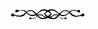

IŞIK. KARANLIK. IŞIK. KARANLIK. IŞIK VE KARANLIK. Karanlığın kıyısında ışık var. Hareketler. Sesler. Yine sesler. Hareketler. Soğuk ve ılık ve sıcak ve ışık ve karanlık ve sertlik ve yumuşaklık, soğuk, ÇOK SOĞUK ve AĞRI ve ılık ve karanlık ve ağrı diniyor. Yine ışık. Hareket. Ses ve daha yüksek ses ve ÇOK YÜKSEK BİR İNEK BÖÖÜRTÜSÜ. Hareket, ışığın önünde bazı biçimler, iğne, ılık ve yeniden karanlık.

IŞIK GÜN, KARANLIK AKŞAM. Gün uyanmak demek ve artık uyanma ve kalkma zamanı. Akşam, yatma zamanı demek.
Kalk, otur, kollarını uzat. Soğuk hava. Sıcak bir dokunuş. Kalk, ayağa kalk. Ayaklar soğuk. Hadi bakalım, şimdi yürü. Yürünecek yer aydınlık, soğuk korkutucu. Islanmak için bir yer, temizlenmek için bir yer. Kollarını uzat, kollarının üzerinden kayan elleri hisset. Bacaklarının üzerinde kayan elleri hisset. Burası soğuk. Duşa gir, tutacaktan tutun. Korkutucu bir ses, korkutucu bir ses. Aptal olma. Ayakta düz dur. Bir şeyler bedene çarpıyor, bir sürü şey bedene çarpıyor, ıslak ve kaygan, soğuk, ılık sonra sıcak su. Tamam, her şey yolunda. Belki yolunda değil. Evet, evet, düz dur. Köpükler, kaygan şeyler. Temiz. Artık temiz. Daha çok ıslak. Artık tamam. Düz dur. Bedenin her yeri ovalanıyor, artık daha sıcak. Giysileri giy. Pantolonu giy, tişörtü giy, terlikleri giy. Yürüme zamanı. Şunu tut. Yürü.
Yemek için bir yer. Kasenin içinde yemek var. Kaşığı al. Kaşığı yiyeceğe daldır. Kaşığı ağzına götür. Hayır, kaşığı düz tut. Bütün yemek döküldü. Yere düştü. Kaşığı düz tut. Yeniden dene. Yeniden dene. Kaşık ağza, yemek de ağza. Yemeğin tadı berbat. Çene ıslandı. Hayır, sakın ağzından püskürtme. Yeniden dene. Yeniden dene. Yeniden dene.
BİÇİMLER, HAREKET EDEN İNSANLAR. Canlı insanlar. Hareket etmeyen biçimler canlı değiller. Yürüyen biçimler, değişiyor. Hareket etmeyen biçimler fazla değişmiyor. İnsanlar giyin, diyor, giyin, iyi görün. İyi görünmek güzeldir. İyi sıcaktır. İyi parıltıdır. İyi gülümsemektir. Gülümseme yüzün bir bölümüyle yapılan harekettir. İyi, mutlu sestir. Ses konuşmak için kullanılır. İnsanlara ne yapması gerektiğini söylemek için. Kahkaha en iyi sestir. Aferin, aferin. Giyinmek iyidir. Konuşmak iyidir.
Birden fazla insan var. İnsanların ismi vardır. İnsanların ismini söylemek iyidir, mutlu bir sestir, hoş hatta sevimli. Bir tanesi Jim, günaydın, kalkma ve giyinme zamanı. Jim’in yüzü koyu renkli, tepesi parlak, elleri sıcak, sesi yüksek. Diğer insan Sally, kendin yiyebilirsin, değil mi? Sally soluk yüzlü, beyaz saçları tepesinde, sesi yüksek değil. Amber soluk yüzlü, siyah saçları tepesinde, sesi Jim kadar yüksek değil, Sally’den daha yüksek.
Merhaba Jim. Merhaba Sally. Merhaba Amber.
JIM KALK, DİYOR. Merhaba Jim. Jim gülümsüyor. Jim mutlu, merhaba Jim diyorum. Kalk, banyoya git, tuvaleti kullan, giysilerini çıkar, duşa gir. Yuvarlak şeye uzan. Jim aferin diyor ve kapıyı kapatıyor. Yuvarlak şeyi çevir. Su. Sabun. Su. İyi bir his. Çok iyi bir his. Kapıyı aç. Jim gülümsüyor. Kendim duş aldım. Jim mutlu. Jim havlu tutuyor. Havluyu al. Her yerini kurula. Kuruluk. Kuruluk iyi bir his. Islaklık da iyi bir his. Sabah iyi bir his.
Giysileri giy, kahvaltıya yürü. Sally’yle masada otur. Merhaba Sally. Sally gülümsüyor. Sally merhaba Sally dedim diye mutlu. Çevrene bak diyor Sally. Çevrene bak. Daha çok masa var. Başka insanlar. Sally’yi tanıyorlar. Sally’yi tanıyorum. Amber’i tanıyorum. Jim’i tanıyorum. Diğerlerini tanımıyorum. Sally aç mısın diye soruyor. Evet diyorum. Sally gülümsüyor. Sally evet dediğim için mutlu oluyor. Kase. Kasede yemek için tahıl gevreği var. Üstünde meyve var. Önce meyveyi yiyorum, tahılı yiyorum, iyi, iyi diyorum. Sally gülümsüyor. Sally iyi dedim diye mutlu oluyor. Sally mutlu ben mutlu. Ben mutlu çünkü meyve tatlı.
Amber gitme zamanı diyor. Merhaba Amber. Amber merhaba Amber dediğim için mutlu. Amber çalışma odasına gidiyor. Ben çalışma odasına gidiyorum. Amber orada otur diyor. Orada oturuyorum. Masa önümde. Amber masanın diğer tarafında oturuyor. Amber oyun zamanı diyor. Amber masanın üstüne bir şey koyuyor. Bu nedir diye soruyor Amber. Mavi.
Mavi diyorum. O rengi diyor Amber, bu şey ne diyor. Dokunmak istiyorum. Amber dokunma sadece bak diyor. Şeyin tuhaf biçimi var, buruşuk. Mavi. Üzülüyorum. Bilmemek iyi değil.
Üzülme diyor Amber. Tamam, tamam. Amber dokunabilirsin diyor. Dokunuyorum. Bir giysi parçası. Tişört. Benim için fazla küçük. Amber gülüyor. Aferin, evet bu bir tişört ve sana fazla küçük. Oyuncak bebek için tişört. Amber bebek tişörtünü alıyor ve başka bir şey koyuyor. Bunun da biçimi komik, buruşuk siyah. Dokunmak yok, sadece bak. Buruşuk mavi şey oyuncak bebek içinse buruşuk siyah şey de oyuncak bebek için mi? Amber dokunuyor. Şey düzleşiyor. Alta doğru iki parça çıkıyor. Pantolon. Oyuncak bebek için pantolon diyorum. Amber gülüyor. Aferin, gerçekten aferin. Sally mutlu. Sally gülüyor.
Daha birçok aferin. Sally güzel. Sally iyi.
Öğle yemeğinden sonra Amber geliyor. Ben yerdeki çizgide sürünüyorum ya da önce bir ayağımı sonra diğerini kaldırıyorum. Amber de sürünüyor. Amber de bir ayağını sonra diğer ayağını kaldırıyor. Düşüyor. Gülüyor. Gülmek güzel. Ben de gülüyorum. Daha çok aferin alıyorum. Amber’i seviyorum.
Yerde sürünmeden sonra masada oyun var. Amber masanın üzerine bir şeyler koyuyor. İsimlerini bilmiyorum. Amber konuşuyor. Şuna bak: Amber siyah şeye dokunuyor. Sen de bir şey bul, Amber diyor. Şeylere bakıyorum. Ona benzer şey bulmaya çalışıyorum. Dokunuyorum. Amber gülümsüyor. Aferin. Amber beyaz şeyle siyah şeyi yan yana koyuyor. Aynısını yap, diyor Amber. Korkutucu. Bilmiyorum. Tamam, tamam, diyor Amber. Bilmemen normal. Amber gülmüyor. Normal değil. Siyah şeyi bul. Bak. Beyaz şeyi bul. Yan yana koy. Amber şimdi gülüyor. Aferin.
Amber üç şeyi yan yana koyuyor. Sen de yap, diyor Amber. Bekliyorum. Bir şey siyah, bir şey siyahı olan beyaz, bir şey sarısı olan bir kırmızı. Bak. Siyah şeyi koy. Siyahı olan beyaz şeyi bul. Onu koy. Sonra sansı olan kırmızı şeyi bul, onu da koy. Aferin diyor Amber. Gerçekten aferin. Mutlu. Amber mutlu, ben mutlu. Birlikte mutlu olmak güzel.
Başka insanlar geliyor. Beyaz önlüklü adını bilmiyorum sadece doktor. Bir tanesi renkli kazaklı, ten rengi pantolonlu.
Amber beyaz önlüklüye merhaba doktor diyor. Doktor Amber’le konuşuyor, bu adam onun arkadaşı diyor. Amber bana bakıyor, sonra diğer adama bakıyor. Adam bana bakıyor. Gülüyor ama mutlu değil.
Adam merhaba Lou ben Tom diyor.
Merhaba Tom diyorum. Bana aferin demiyor. Doktorsun diyorum.
Tıp doktoru değilim diyor Tom. Tıp doktoru olmamak ne bilmiyorum.
Amber bu adam seni ziyaret edebilecekler listesinde diyor. Onu önceden tanıyorsun.
Neden önce? Tom mutlu görünmüyor. Tom üzgün görünüyor.
Tom’u tanımıyorum diyorum. Amber’e bakıyorum. Tom’u tanımamak kötü mü?
“Eskiye dair hiçbir şey hatırlamıyor musun?” diyor Tom.
Eskiye? Bu soru beni rahatsız ediyor. Ben bu anı biliyorum. Ben Jim’i, Sally’yi, Amber’ı, doktoru, yatak odasını, banyoyu, nerede yediğimi, nerede oyun oynadığımı biliyorum.
Önemli değil diyor Amber. Sana sonra anlatırız. Önemli değil. İyi gidiyorsun.
Gitsek iyi olacak diyor doktor. Tom’la doktor gidiyor.
Neden önce?
Amber yeni bir sıra yapıyor. Benim yaptığımı yap diyor.
“SİZE ÇOK ERKEN OLDUĞUNU SÖYLEMİŞTİM,” DİYOR DR. HENDRICKS KORİDORA ÇIKTIKLARINDA. “Sizi hatırlamayacağını söylemiştim.”
Tom tek taraflı camdan yeniden içeri bakıyor. Lou -ya da bir zamanlar Lou- onunla ilgilenen terapiste bakıp, onun yaptığı sıralamayı yaptı. Lou’nun ona boş gözlerle bakıp “Merhaba Tom,” deyişini hatırlayınca Tom’un içini bir öfke ve hüzün kapladı.
“Şu anda ona bazı şeyleri açıklamak onu sadece bunalıma sürükler,” dedi Hendricks. “Büyük olasılıkla bunları anlamayacaktır.”
Tom konuşmakta güçlük çekti zaten çıkan ses de kendisine ait değil gibiydi. “Sizin - sizin ne yaptığınıza dair en ufak bir fikriniz var mı?” Kendisine zor hakim oluyordu. Arkadaşını bu hale sokan insanların boğazına yapışmak istiyordu.
“Evet. Durumu iyiye gidiyor.” Hendricks’in sesi edepsiz bir biçimde kendinden hoşnutmuş gibi çıkıyordu. “Geçen hafta bu hafta yaptıklarının hiçbirini yapamıyordu.”
Durumu iyiye gidiyormuş! Orada oturup renkli kutuları yan yana dizmek Tom’a göre durumunu iyiye gitmesi anlamına gelmiyordu. Özellikle de Lou’nun şaşırtıcı becerilerinin hatırladığında. “Ancak... biçim düzeni analizi ve üretim onun tanrı vergisi becerileriydi.”
“Beyninin yapısında geniş kapsamlı değişiklikler oldu,” dedi Dr. Hendricks. “Değişiklikler olmaya da devam ediyor. Beyni sanki yıllar öncesine gitti, bir anlamda bir çocuğun beyniyle aynı. Şekil alabilirliği ve uyarlama becerisi çok yüksek.”
Kadının ses tonundaki kendini beğenmişlik Tom’u çileden çıkarıyordu; yaptığı şey konusunda hiçbir kuşkusu olmadığı açıktı. “Bu ne kadar sürecek?” diye sordu.
Hendricks bir süre yanıt vermedi. “Bilmiyoruz. Genetik ve nanoteknolojinin birleşimiyle, hızlandırılmış nöral gelişimle iyileşme sürecinin kısa süreceğini düşünüyoruz - en azından umuyoruz, tıpkı hayvan modelinde olduğu gibi. Ancak tabii insan beyni daha karmaşık.”
“Bunu bu işe başlamadan önce biliyordunuz,” dedi Tom. Sesinin suçlayan bir tonda çıktığının farkındaydı. Diğerlerinin durumunu merak etti, tedaviye kaç kişinin katıldığını hatırlamaya çalıştı. Odada terapistlerle çalışan iki adam daha vardı. Diğerlerinin durumu iyi miydi? Onların adlarını bile bilmiyordu.
“Evet.” Onun bu yumuşak başlı kabullenirliği onu daha beter çileden çıkardı.
“Aklınızda ne vardı?”
“Yardımcı olmak. Sadece yardımcı olmak. Bakın.” Camı işaret etti ve Tom da baktı.
Lou’nun yüzüne sahip olan adam -elbette ifadesine değil— kutuları doğru biçimde yerleştirdikten sonra mutlu bir biçimde masanın diğer tarafında oturan terapistine bakıyordu. Terapist ona bir şey söyledi -Tom camın diğer tarafından kadının ne söylediğini duyamadı, ancak rahat bir biçimde gülümseyerek hafifçe başını sallayan Lou’nun tepkisini görebiliyordu. Bu hiç Lou’ya benzemiyordu, tuhaf bir biçimde normal bir insandı; Tom nefesinin kesildiğini hissetti.
“Sosyal etkileşimi şimdiden daha normal bir hale geldi. Daha kolay motive olabiliyor; insanlarla birlikte olmaktan hoşlanıyor. Hala çocuksu olmasına rağmen kendinden daha memnun bir kişiliği var. Algı işlemlemesi normale dönmüş görünüyor. Konuşması günden güne ilerliyor. Bu ilerlemeler karşısında kaygı giderici ilaçların dozunu düşürmeye başladık.
“Peki, ya anıları?”
“Bunun için şu anda bir şey söylemek zor. Psikotik kitlelerde yitik anıların yeniden kazanılmasıyla ilgili deneyimlerimiz bir noktaya kadar başarılı olduğumuzu gösteriyor. Çoklu algı kayıtları yaptık ve bunlar yeniden beyne yerleştirilecek. Şu anda girişi biyokimyasal bir ajanla bloke ettik -özel tescilli bir ilaç olduğu için adını veremiyorum- birkaç hafta sonra anıların akışını sağlamaya başlayacağız. Bunu yapmadan önce algı işlemleme ve entegrasyonunun tamamen sabit bir alt yapıya kavuştuğundan emin olmak istiyoruz.”
“Yani ona daha önceki hayatını tam olarak vereceğinizden emin değilsiniz?”
“Hayır, ancak kesinlikle umutluyuz. Ve durumu asla travma nedeniyle hafızasını yitirmiş birinden daha beter olmayacak.” Onların Lou’ya yaptığı şeye travma adı verilebilir diye düşündü Tom. Hendricks konuşmaya devam etti. “Ne de olsa insanlar günlük ve sosyal yaşamla ilgili becerilerini yeniden öğrenebildikleri sürece geçmişe dair anıları olmadan da uyumlu ve bağımsız bir biçimde yaşayabilirler.”
“Peki, ya zihni?” dedi Tom sesini yükseltmemeye çalışarak. “Şu anda bir özürlü gibi görünüyor, fakat daha önce neredeyse bir dahiydi.”
“Pek öyle söylenemez,” dedi Dr. Hendricks. “Yaptığımız testlere göre ortalamanın üstündeydi, bu yüzden on ya da yirmi puanlık bir kayıp olsa bile bu onun bağımsız bir biçimde yaşamasına engel olmaz. Ancak o bir dahi değildi.” Sesindeki kuşkusuzluk, Lou’yu elden çıkarmış olmanın serinkanlılığı kasten yapılan zalimlikten daha beter geliyordu kulağa.
“Onu daha önceden -ya da diğerleri- tanıyor muydunuz?” diye sordu Tom.
“Hayır, elbette hayır. Onlarla bir kez karşılaştım ancak onları kişisel olarak tanımam pek uygun olmazdı. Test sonuçları bende var ve onlarla yapılan görüşmeler ve hafıza kayıtları rehabilitasyon ekibinin psikologları tarafından tutuluyor.”
“O sıra dışı bir adamdı,” dedi Tom. Kadının yüzüne baktı ve yaptığı şeyden duyduğu gurur ve işine dönmek için telaştan başka bir şey göremedi. “Umarım yine öyle olur.”
“En azında otizmli olmayacak,” dedi sanki bu her şeyi haklı çıkarıyormuş gibi.
Tom otizmli olmanın o kadar kötü bir şey olmadığını söyleyecekti ki, vazgeçti. Onun gibi biriyle tartışmanın anlamı yoktu, en azından orada ve şimdilik, ancak Lou için artık çok geçti. Bu kadın, Lou’nun iyileşmesi için tek umuttu -bu düşünce tüylerini ürpertti.
“Biraz daha iyi olduğunda yine gelmelisiniz,” dedi Dr. Hendricks. “Ve başarımızı daha iyi takdir edebilirsiniz. Sizi ararız.” Yine geleceğini düşünmek midesini kasıyordu, ama bu kadarını Lou’ya borçluydu.
Dışarı çıktığında Tom montunun fermuarını çekti ve eldivenlerini giydi. Acaba Lou kışın geldiğini biliyor muydu? Birimin içinde dışarıya bakan pencere görmemişti. Öğle sonrasının kasvetli havası ve ayaklarının altındaki çamur ruh halinin bir yansımasıydı.
Eve gidene kadar tıbbi araştırmalara lanet edip durdu.
KARŞIMDA BİR YABANCIYLA MASADA OTURUYORUM, BU BEYAZ ÖNLÜKLÜ BİR KADIN. Uzun zamandır burada olduğuma dair içimde bir his var ancak neden olduğunu bilmiyorum. Bu tıpkı araba kullanırken başka bir şey düşünüp, arada neler olup bittiğini anlamadan birkaç kilometre fazla yol gitmek gibi bir şey.
Sersemliği atıp, kendine gelmek gibi bir şey. Nerede olduğumdan ya da ne yapıyor olduğumdan emin değilim.
“Üzgünüm,” diyorum. “Bir an için dalmışım. Yeniden söyler misiniz?”
Kadın şaşkınlıkla bana bakıyor; gözleri açılıyor.
“Lou? iyi misin?”
“İyiyim,” diyorum. “Sadece biraz sersem gibiyim...”
“Kim olduğunu biliyor musun?”
“Elbette,” diyorum. “Ben Lou Arrendale.” Kendi adımı bilemeyeceğimi neden düşündüğünü anlayamıyorum.
“Nerede olduğunu biliyor musun?”
Çevreme bakınıyorum. Kadının üzerinde beyaz bir önlük var; oda belli belirsiz bir biçimde ya okul ya da bir klinik gibi görünüyor bana.
“Tam olarak değil,” diyorum. “Bir çeşit klinik mi?”
“Evet,” diyor. “Hangi günde olduğumuzu biliyor musun?”
Bir an hangi günde olduğumuzu bilmediğimi fark ediyorum. Duvarda bir takvim ve saat var ancak takvim Şubat ayını göstermesine rağmen bir tuhaflık hissediyorum. En son sonbahardan bir şeyler hatırlıyorum.
“Bilmiyorum,” diyorum. Korkmaya başlıyorum. “Neler oldu? Hastalandım mı yoksa bir kaza mı geçirdim?”
“Bir beyin ameliyatı geçirdin,” diyor. “Bu konuda bir şey hatırlıyor musun?”
Hatırlamıyorum. Bir şeyler hatırlamaya çalıştığımda ortada yoğun bir sisten ve karanlıktan başka bir şey yok. Başıma dokunmak için elimi uzatıyorum. Ağrı ya da acı yok. Elime dikiş gelmiyor. Saçımda da bir anormallik yok.
“Kendini nasıl hissediyorsun?” diye soruyor.
“Korkmuş,” diyorum. “Neler olduğunu bilmek istiyorum.”
BİRKAÇ HAFTADIR KENDİ BAŞIMA AYAKTA DURABİLİYOR VE YÜRÜYEBİLİYORUM, SÖYLEDİKLERİ YERE GİDİYORUM, SÖYLEDİKLERİ YERE OTURUYORUM. Her şeyin farkındayım; dünü hatırlıyorum, gerçi daha önceki günler belirsiz.
Öğle sonralarında fizik tedavisi görüyorum. Haftalardır yatakta olduğum için zayıf düşmüşüm, yürüyememişim. Artık güçleniyorum.
Spor salonunda bir yukarı bir aşağı yürümek sıkıcı geliyor. Yanlarında korkulukları olan bir merdiven var ve ben inip çıkma egzersizleri yapıyorum ancak bu da çok sıkıcı geliyor. Fizyoterapistim Missy, top oynamayı teklif ediyor. Nasıl oynandığını hatırlamıyorum, bana topu atıyor ve ona geri atmamı söylüyor. Benden sadece birkaç metre ötede oturuyor. Ben topu ona atıyorum o da bana geri atıyor. Çok kolay. Geri çekilip topu tutuyorum. Yeniden ona atıyorum. Çok kolay. Eğer vurursam ses çıkaracağını söylediği bir hedef gösteriyor. Dört metreden vurmak kolay; sekiz metrede birkaç kez ıskalıyorum ancak sonra her defasında hedefi vuruyorum.
Geçmişi pek fazla hatırlayamasam da zamanımın çoğunu topu tutup atmakla geçirdiğimi sanmıyorum. Gerçek insanların oynadığı, gerçek top oyunları bundan daha karmaşık olmalı.
BU SABAH KENDİMİ DAHA DİNLENMİŞ VE GÜÇLÜ HİSSEDİYORUM. Dünden ve ondan önceki günden ve ondan daha önceki günden bir şeyler hatırlıyorum. Jim beni kontrol etmeye gelmeden önce giyinmiş ve kimse bana tarif etmeden yemek salonunu bulmuştum. Kahvaltılar çok sıkıcı; sadece sıcak ya da soğuk tahıl ezmeleri, muz ve portakal var. Ya sıcak tahıl ezmeleriyle, muz veya portakal ya da soğuk tahıl ezmeleriyle muz veya portakal alabiliyorum, o kadar. Çevreme baktığımda, isimlerini hatırlamak birkaç dakikamı alsa da tanıdık insanlar görüyorum. Dale. Eric. Cameron. Onları önceden tanıyorum. Onlar da tedavi gurubundaydılar. Daha fazla kişi vardı; onların nerede olduklarını merak ediyorum.
“Keşke waffle olsa,” diyor Eric masaya oturduğumda. “Aynı şeyleri yemekten bıktım.”
“Sanırım isteyebiliriz,” diyor Dale. “Ancak bir işe yarayacağını sanmıyorum.”
“Bunlar sağlıklı yiyecekler olmalı,” diyor Eric. Dalga geçiyor; hepimiz gülüyoruz.
Ne yemek istediğimden emin değilim ancak tahıl ezmesi ve meyve olmadığı kesin. Daha önce sevdiğim yiyecekler belli belirsiz kafamdan geçiyor. Diğerlerinin neler hatırladığını merak ediyorum; onların da nelerden hoşlandığını bildiğimi sanıyorum ancak bunun nasıl olabildiğini anlamıyorum.
Hepimiz sabahları çeşitli terapiler alıyoruz; konuşma, zihinsel, günlük yaşam becerileri. Net olmasa da bunları uzun zamandır her sabah yaptığımı hatırlıyorum.
Bu sabah bana inanılmaz sıkıcı geliyor. Sürekli sorular ve talimatlar. Lou, bu nedir? Bir kase, bir bardak, bir tabak, bir sürahi, bir kutu... Lou, mavi bardağı sarı sepetin içine koy - ya da yeşil kurdeleyi kırmızı kutunun üzerine koy ya da kutuları yan yana diz ya da bunlar gibi gereksiz şeyler. Terapistin elinde birtakım işaretler koyduğu bir form var. Formun başlığını okumaya çalışıyorum ancak tersten okumak zor. Sanırım eskiden bunu kolaylıkla yapabiliyordum. Bunun yerine ben de kutuların üzerindeki etiketleri okuyorum: TANISAL BECERİ SETİ 1, GÜNLÜK YAŞAM BECERİ SETİ 2.
Odaya göz gezdiriyorum. Hepimiz aynı şeyleri yapmıyoruz ancak hepimiz terapistlerle birebir çalışıyoruz. Bütün terapistlerin üzerinde beyaz önlük var. Bu beyaz önlüklerin altında hepsinin farklı renkte giysisi var. Odanın karşısındaki dört masaların üzerinde dört bilgisayar duruyor. Onları neden hiç kullanmadığımızı merak ediyorum. Şimdi bilgisayarların ne olduğunu ve onlarla neler yaptığımı biraz hatırlıyor gibiyim. Bunlar sözcüklerle, sayılarla ve resimlerle dolu kutucuklar ve bunlardan sorulara yanıt alınabiliyor. Sorulara kendim yanıt vermektense, onlara yanıt verecek bir makinem olsun isterdim.
“Bilgisayarı kullanabilir miyim?” diye soruyorum Janis’e, konuşma terapistim.
Şaşırmış görünüyor. “Bilgisayarı kullanmak mı? Neden?”
“Bunlar çok sıkıcı,” diyorum. “Bana sürekli aptalca sorular soruyorsunuz ve aptalca şeyler yapmamı istiyorsunuz; hepsi çok kolay.”
“Lou, bunların sana yardımı olacak. Zekanı anlamaya çalışıyoruz.” Bana çocukmuşum ve pek akıllı değilmişim gibi bakıyor.
“Sıradan sözcükleri biliyorum; bilmek istediğin bu mu?”
“Evet, ancak ilk uyandığında bunları bile bilmiyordun,” diyor. “Bak, bir sonraki aşamaya geçebilirim.” Eline başka bir test kitapçığı alıyor. “Bakalım, buna hazır mısın ancak zor gelirse aldırma...”
Resimlerle sözcükleri eşleştirmem gerekiyor. Sözcükleri okuyor, ben de resimleri gösteriyorum. Çok kolay; birkaç dakikada bitiriyorum. “Eğer sözcükleri benim okumama izin verirseniz daha çabuk biter,” diyorum.
Yine şaşırmış görünüyor. “Sözcükleri okuyabiliyor musun?”
“Elbette,” diyorum, şaşkınlığına şaşırıyorum. Ben bir yetişkinim; yetişkinler okuyabilir. Kendimi rahatsız hissediyorum, okuyamadığıma dair belli belirsiz bir anı beliriyor kafamda harfleri okuyamamakla, biçimleri diğerlerinden ayıramamakla ilgili. “Daha önce okuyamıyor muydum?”
“Evet, uyandıktan hemen sonra okuyamamıştın,” diyor. Bana başka sözcüklerin ve resimlerin bulunduğu başka bir liste veriyor. Sözcükler kısa ve basit: ağaç, bebek, kamyon, araba, tren. Başka bir liste daha veriyor; bu listede hayvanlar var. Sonra da bazı gereçlerin olduğu başka bir liste. Hepsi çok kolay.
“Hafızam geri geliyor,” diyorum. “Tüm bu sözcükleri hatırlıyorum.”
“Öyle görünüyor,” diyor. “Okuduğunu anlayabilme testlerine ne dersin?”
“Tabii,” diyorum.
Bana ince bir kitapçık veriyor. İlk paragraf beyzbol oynayan iki çocukla ilgili. Sözcükler çok kolay; benden istediği gibi yüksek sesle okuyorum, bir süre sonra sanki metni aynı biçimde okuyan ancak iki farklı mesaj algılayan, iki kişiymişim gibi hissediyorum. Duruyorum.
“Ne oldu?” diye soruyor ben okumayı kesince.
“Ben -ben bilemiyorum. “Çok komik.” Komik derken gülünesi bir şey kastetmiyorum, tuhaf bir şey bu. Kişiliklerden bir tanesi okuduğunu, Bill beyzbol sopasını kırıp bunu itiraf etmediği için Tim’in kızdığını anlıyor; diğer kişilikse sopayı babası verdiği için Tim’in kızdığını anlıyor. Aşağıdaki soruda Tim’in neden kızdığı soruluyor. Yanıtı bilmiyorum. Emin değilim.
Bunu terapiste açıklamaya çalışıyorum. “Tim doğum günü için bir beyzbol sopası değil, bisiklet istemişti. Tim bu yüzden kızmış olabilir ya da Bill’in babasının verdiği sopayı kırmasına kızmış olabilir. Neye kızdığını bilmiyorum çünkü hikaye bana yeterli bilgiyi vermiyor. Terapist kitapçığa bakıyor. “Hmm. Cevap anahtarında C’nin doğru olduğu yazıyor ancak senin ikilemini anlıyorum. Bu iyi, Lou. Sosyal ayrıntıları anlayabiliyorsun. Bir başkasını dene.”
Başımı sallıyorum. “Bunun düşünmek istiyorum,” diyorum. “Bunlardan hangisinin benim yeni kişiliğim olduğunu bilmiyorum.”
“Ama Lou-” diyor.
“İzninizle.” Sandalyemi geri itip, ayağa kalkıyorum. Bunu yapmanın kabalık olduğunu biliyorum; bunu yapmam gerektiğini de biliyorum. Sonra bir an için oda aşırı aydınlanıyor, sanki her köşe keskin parlak bir çizgiyle ışıldıyor. Derinliği kavramak güç; masanın kenarına çarpıyorum. Işık kararıyor; köşelerdeki parlaklıklar sönüyor. Dengemi kaybettiğimi hissediyorum... sonra bir elim masanın kenarında kendimi yerde emeklerken buluyorum.
Masanın sert kenarını elimin altında hissedebiliyorum; ahşap kaplama. Suntanın içindeki parçacıkları görebiliyorum. Havalandırmadan gelen havayı ve ciğerlerime dolan havayı hissedebiliyorum. Kalp atışımı hatta kulağımın içinde seslerin akışıyla hareketlenen kıllarımı bile hissedebiliyorum -bunların kıl olduğunu nereden biliyorum? Kokuların saldırısına uğruyorum; kendi ekşi kokumu, yer döşemesinin temizlik malzemesinin kokusunu, Janis’in tatlı kozmetik kokusunu duyuyorum.
İlk uyandığımda da böyleydi. Şimdi hatırlıyorum; algı verilerinin içinde uyanıyorum, verilerin içinde boğuluyorum, dengemi bulmakta güçlük çekiyorum, aşırı yüklenmeden kurtulamıyorum. Zaman geçtikçe ışığın, karanlığın, renklerin, biçimlerin, seslerin, kokuların, tatların ve dokuların biçim düzenlerini anlamlandırmak için verdiğim mücadeleyi hatırlıyorum.
Yerler pastel gri üzerine, koyu gri benekli plastik karolarla kaplı, masa ahşap kaplamalı suntadan yapılmış; şu anda terapi odasındayım. Ben Lou Arrendale, bir zamanlar otizmli olan, ancak şimdi kim olduğu bilinmeyen Lou Arrendale.
Başımı kaldırıp duvara kadar uzanan yer döşemelerine bakıyorm; dalgalanıyor sonra sabitleşiyor. İşçiler bunları düz olarak döşemişler ancak gerçekten düz değiller, ancak önemi yok; alışkanlık gereği düz deniyor. Onu düz görebilirim.
“Sen iyi misin? Lou, lütfen... bana yanıt ver!”
Yeterince iyiyim. “İyiyim,” diyorum Janis’e. Yeterince iyiyim ancak gerektiği kadar iyi değilim. Korkmuş görünüyor. Onu korkuttum. Onu korkutmak istememiştim. Birini korkutunca onu rahatlatmak gerek. “Üzgünüm,” diyorum. “Bu da o anlardan biriydi.”
Biraz rahatlıyor. Doğrulup, ayağa kalkıyorum. Duvarlar pek düz gibi görünmüyor ancak yeteri kadar düzler.
Ben yeterince Lou’yum. Önceki Lou ve şimdiki Lou, önceki Lou bana onca yılın deneyimlerini ödünç veriyor, bunlar onun asla tam olarak anlayamadığı deneyimler ve şimdiki Lou değerlendiriyor, yorumluyor ve yeniden değerlendiriyor. Her ikisi de benim içimde - her ikisine de sahibim.
“Biraz yalnız kalmaya ihtiyacım var,” diyorum Janis’e. Yeniden endişelenmiş görünüyor. Benim için endişelendiğini biliyorum; yalnız kalmayı istememi onaylamadığını biliyorum.
“İnsanlarla etkileşimini kesmemen gerekiyor,” diyor.
“Biliyorum,” diyorum. “Ancak insanlarla gün içinde saatlerimi geçiriyorum. Şu anda yalnız kalmaya ve olan biteni anlamaya ihtiyacım var.”
“Bana anlat, Lou,” diyor. “Neler olduğunu anlat.”
“Anlatamam,” diyorum. “Zamana ihtiyacım var...” Kapıya doğru adım atıyorum. Yanından geçerken masa biçim değiştiriyor; Janis biçim değiştiriyor; kapı ve duvarlar tıpkı sarhoş bir adam gibi üzerime geliyor -sarhoş bir adamı nerede görmüş olabilirim? Nereden biliyorum? Bunu nasıl hatırlıyorum ve düz olmayan bir yer döşemesini nasıl düz olarak kabul edebiliyorum? Küçük bir çabayla kapı ve duvarların da düz olmasını sağlıyorum; elastikleşmiş olan masa da eski dikdörtgen biçimini alıyor.
“Ama Lou, algı sorunları yaşıyorsan doktorların ilaçlarının dozlarını ayarlaması gerekiyor.”
“Ben iyiyim,” diyorum arkama bakmadan. “Sadece bir molaya ihtiyacım var.” Tartışmanın sonu: “Tuvalete gitmem gerekiyor.”
Az önce olan şeyin algı bütünleşmesi ve görsel işlemlemeyle ilgili bir şey olduğunu biliyorum -ya da bir şekilde hatırlıyorum. Yürümek tuhaf. Yürüdüğümü biliyorum; bacaklarımın kolayca hareket ettiğini hissediyorum. Ancak ben sendelediğimi, ardı ardına tuhaf hareketler yaptığımı sanıyorum. Ayak sesleri duyuyorum, ayak seslerinin yankılanmasını ve yeniden yankılanmasını duyuyorum.
Önceki Lou bana bunun eskiden, küçüklüğünden beri böyle olmadığını söylüyor. Önceki Lou bana erkekler tuvaletinin kapısına odaklanmamı ve içeri girmemi söylerken, şimdiki Lou
kendisine yardımcı olması için okuduğu kitapların ya da duyduklarının anılarını kurcalıyor.
Erkekler tuvaleti sessiz; burada başka kimse yok. Porselen figürlerden, parlak metal kapı kollarından ve borulardan gelen ışık gözüme yansıyor. Tuvaletin sonuna doğru iki kabin var; birine girip kapıyı kapatıyorum.
Önceki Lou yer karoları, duvar karolarına bakıp kabinin hacmini hesaplamaya çalışıyor. Şimdiki Lou yumuşak ve karanlık bir yere sığınıp sabaha kadar orada kalmak istiyor.
Şu anda sabah. Hala sabah ve biz -ben- daha öğle yemeği yemedik. Nesne kalıcılığı. Nesne kalıcılığına ihtiyacım var. Önceki Lou’nun bu konuda bir kitapta okuduğu şey benim aklıma geliyor -bu onun okuduğu ve benim hem hatırladığım, hem de hatırlamadığım bir kitap. Nesne kalıcılığı bebeklerde olmuyor, yetişkinlerde oluyor. Doğuştan kör olup da körlüğü tedavi edilmiş kişiler bunu öğrenemiyorlar: bir masanın yanından geçerken, masanın bir şekilden başka bir şekle girdiğini görüyorlar.
Ben doğuştan kör değildim. Önceki Lou’nun görsel işlemlemesinde nesne kalıcılığı vardı. Benim de olması gerekiyor. Aslında o hikayeyi okuyana kadar vardı...
Kalp atışlarımın yavaşladığını hissediyorum. Eğilip, yer karolarına bakıyorum. Onların boyutlarına, zeminin ne kadar yer kapladığına ya da kabinin hacminin ne kadar olduğuna aldırmıyorum. Eğer burada mahsur kalmış ve sıkılmış olsaydım tüm bunları hesaplayabilirdim, ancak şu anda sıkılmış değilim. Kafam karışık ve endişeliyim.
Neler olduğunu bilmiyorum. Beyin ameliyatı? Ne bir yaram, ne dikişlerim ne de saçlarımda kazınmış bir yer var. Acil bir müdahale miydi?
Çeşitli duygular içindeyim: korku sonra öfke ve sanki bir büyüyüp bir küçülüyormuş gibi hissediyorum. Öfkelendiğimde ben büyüyorum ve diğer her şey küçülüyor. Korktuğumda ben küçülüyorum ve diğer her şey büyüyor. Bu duygularımla oynuyorum ve kabinin boyut değiştirmesini şaşkınlıkla izliyorum. Gerçekte boyut değiştirmesi imkansız. Peki, değiştirseydi anlayabilir miydim?
Aniden kafamda bir müzik beliriyor, piyano. Yumuşak bir biçimde akıyor, düzenli bir ses... gözlerimi sımsıkı kapatıyorum ve yine rahatlıyorum. Aklıma bir isim geliyor: Chopin. Bir etüt. Bir etüt çalışması... hayır, bırak müzik aksın; düşünme.
Ellerimi kollarımın üzerinde gezdiriyorum, tüylerin yayılma biçimini hissediyorum. Bu beni rahatlatıyor ancak devam etmeme gerek yok.
“Lou! Orada mısın? İyi misin?” Bu günlerdir benimle ilgilenen görevli Jim. Kafamdaki müzik giderek kayboluyor, ancak tenimin altında dalgalanarak beni rahatlattığını hissediyorum.
“İyiyim,” diyorum. Sesimin daha sakin çıktığını duyabiliyorum. “Sadece bir molaya ihtiyacım vardı, o kadar.”
“Dışarı çıksan iyi olacak, dostum,” diyor. “Buradakiler kafayı yemeye başladılar bile.”
İç geçirerek kalkıyorum ve kapıyı açıyorum. Yürürken nesne kalıcılığının biçimini koruduğunu görebiliyorum; kapılar ve duvarlar olmaları gerektiği gibi düz; nesnelerin üzerinden yansıyan parlak ışık beni rahatsız etmiyor. Jim bana sırıtıyor. “İyi misin, dostum?”
“İyiyim,” diyorum yine. Önceki Lou müziği severdi. Önceki Lou dengesini bulmak için müziği kullanırdı... önceki Lou’nun müziklerinin ne kadarını hatırlayacağımı merak ediyorum.
Janis ve Dr. Hendricks koridorda bekliyorlar. Onlara gülümsüyorum. “Ben iyiyim,” diyorum. “Gerçekten tuvalete gitmem gerekiyordu.”
“Ancak Janis senin düştüğünü söyledi,” diyor Dr. Hendricks.
“Ufak bir dengesizlikti,” diyorum. “Okurken bir karmaşa yaşadım... algılarımda bir karışıklık oldu, fakat şimdi geçti.” Emin olmak için koridorun her iki tarafına bakıyorum. Her şey normal görünüyor. “Bana gerçekten neler olduğu hakkında sizinle konuşmak istiyorum,” diyorum Dr. Hendricks’e. “Bana beyin ameliyatı dediler, görebildiğim kadarıyla bir iz yok. Ve beynimde neler olup bittiğini öğrenmek istiyorum.”
Dudaklarını büzüyor ve sonra başını sallıyor. “Pekala. Danışmanlardan biri bunu sana açıklayacak. Ama sana şu kadarını söyleyebilirim, bizim yaptığımız ameliyatlarda artık kafanda kocaman delikler açmıyoruz. Janis, onun için bir randevu ayarla.” Sonra yürüyüp gidiyor.
Ondan pek hoşlandığımı sanmıyorum. Onun birçok sır sakladığını hissediyorum.
KIZIL SAKKALI, NEŞELİ GENÇ BİR ADAM OLAN DANIŞMANIN, BANA NELER YAPTIKLARINI ANLATTIĞINDA ŞOK GEÇİRİYORUM. Önceki Lou buna nasıl izin verdi? Böyle bir riski nasıl göze aldı? Onu omuzlarından yakalayıp, sarsmak istiyorum ancak o artık benim. Ben onun geleceğiyim, o da benim geçmişim. Bunu danışmanıma söylemiyorum, büyük olasılıkla benim deli olduğumu düşünecektir. Sürekli güvende olduğuma ve benimle ilgileneceklerine inandırmaya çalışıyor; sakin ve rahat olmamı istiyor. Dışardan bakıldığında sakin ve rahatım. İçimde ikiye ayrılmış durumdayım; adamın kravatının dokusunun biçim düzenini anlamaya çalışan önceki Lou’yu omuzlarından tutup sarsmak ve danışmana gülmek ve güvende olmak ya da ilgilenilmek istemediğimi söylemek istiyorum. Bunları artık geçtim. Onun güvende olmaktan kastettiği şey için artık çok geç ve ben artık kendimle ilgilenebilirim.
GÖZLERİM KAPALI YATAĞIMDA YAŞADIKLARIMI DÜŞÜNÜYORUM. Aniden kendimi uzay boşluğunda ve karanlıkta asılı kalmış hissediyorum. Küçücük ve renkli ışık parçacıklarından çok uzakta. Onların yıldızlar olduğunu ve belirsiz olanların da galaksiler olduğunu biliyorum. Yine müzik başlıyor, yine Chopin. Yavaş, dalgın nerdeyse hüzünlü. E minör gibi bir şey. Sonra başka bir müzik geliyor, farklı bir duygu yaratıyor: daha güçlü ve tıpkı altımda yükselen bir okyanus dalgası gibi, ancak bu ışık dalgası.
Renkler yer değiştiriyor: analize gerek yok, uzak yıldızlara doğru gidiyorum, giderek daha hızlı bir biçimde uzayın merkezine ve zamana doğru ilerliyorum.
Uyandığımda kendimi daha önce hiç olmadığım kadar mutlu hissediyorum ve bunun nedenini bilmiyorum.
TOM YENİDEN GELDİĞİNDE BU DEFA ONU TANIYORUM VE DAHA ÖNCE DE GELDİĞİNİ HATIRLIYORUM.
Ona söyleyecek çok şeyim, soracak çok sorum var. Önceki Lou, Tom’un onu herkesten daha iyi tanıdığını düşünüyor. Eğer elimden gelseydi önceki Lou’nun onu karşılamasını isterdim. Ancak bu artık imkansız.
“Birkaç gün sonra çıkacağız,” diyorum. “Apartman yöneticisiyle konuştum bile, ben gitmeden elektriği açacak ve her şeyi hazırlayacak.”
“Kendini nasıl hissediyorsun?” diye soruyor.
“İyi,” diyorum. “Bunca zamandır geldiğin için teşekkür ederim; seni tanıyamadığım için üzgünüm.”
Başını eğiyor; gözlerinin dolduğunu görebiliyorum; göz- yaşlarından dolayı utanıyor. “Bu senin hatan değildi, Lou.” “Hayır, ancak endişelendiğini biliyorum,” diyorum. Önceki Lou bunu bilemeyebilirdi, fakat ben biliyorum. Tom’un başkalarını gerçekten önemsediğini anlayabiliyorum; onun yüzünü bile hatırlamadığımda kendisini nasıl hissetmiş olabileceğini hayal ediyorum.
“Bundan sonra ne yapacağını biliyor musun?” diye soruyor. “Akşam okulları konusunda senden bilgi almak istiyorum,” diyorum. “Üniversiteye geri dönmek istiyorum.”
“İyi fikir,” diyor. “Kabul edilmen için sana kesinlikle yardımcı olurum. Ne okumak istiyorsun?”
“Astronomi,” diyorum. “Ya da astrofizik. Tam olarak emin değilim ancak ikisinden biri. Uzaya gitmek istiyorum.”
Şimdi biraz üzgün görünüyor ve zoraki gülümsediğini fark ediyorum. “Umanın istediğin olur,” diyor. Sonra fazla itici olmaktan kaçınarak, “Akşam okulları eskrim yapman için sana fırsat vermeyebilir,” diyor.
“Vermez,” diyorum. “Ancak neler yapabileceğimi görmek istiyorum. Eğer uygunsa sizleri ziyarete gelirim.”
Rahatlamış görünüyor. “Elbette, Lou. Senin izini kaybetmek istemem.”
“İyi olacağım,” diyorum.
Başını sallıyor. “Biliyorum, olacaksın. Gerçekten iyi olacağını düşünüyorum.”